It is our intention to show you the royal road to card magic, and the first stage of our journey is to instruct you in the use of the overhand shuffle and to explain the many purposes that it serves.
Anyone who plays cards has learned to execute the overhand shuffle. It is a simple operation, yet it is the first step - and a very important one - on the road to the mystery of card magic. It is essential that you master this first step before continuing on your journey, and for this reason we urge you to learn the various shuffles and perform the many fine tricks that they make possible before you pass on to the other sections.
Each succeeding chapter in this book, except the last, leads to the one that follows and supplements the one that preceded. By resisting the impulse to learn everything at once but by practising each step as you go, you will, with a speed that will amaze you, soon have travelled the entire road. When finally in that way you have reached its end, you will be a far more competent card conjurer than will the more impatient reader.
With this final word of caution, we now start you on your pleasant journey.
Position of the Pack in the Hands
It is essential that the cards are handled neatly and precisely, and the first requisite towards acquiring this neatness of execution is the position of the pack in the hands.
1. Hold your left hand half closed, palm upwards, and place the pack in it, face downwards so that the third phalanx of the index finger is bent against the outer left corner. The middle and ring fingers, slightly bent rest against the face of the bottom card; the little finger curls inwards so that its side rests against the inner end, and the thumb rests on the top card, its tip near the middle of the outer end.
The pack should slope downwards towards the left at an angle of about 45 degrees, its lower side resting along the palm of the hand. In this position the pack can be gripped, as in forceps, between the index and the little fingers by pressing them against the opposite ends (figure 1).
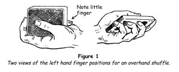
This position of the pack gives one perfect control of the cards and should be strictly adhered to. The grip should be firm but light; in fact, the lightest touch possible, consistent with security, must be cultivated from the outset.
Execution of the Overhand Shuffle
In making this shuffle do not look at your hands and the cards. Practise this from the outset as it is an essential factor in the manoeuvres that follow, and that are done under cover of the action of this shuffle.
The speed at which the shuffle is executed should be about the same as that used by any card player, neither too fast nor too slow, and the tempo should be an even one throughout.
USING THE OVERHAND SHUFFLE
Controlling the Top Card
In this sleight, as well as in the others to follow, the action must become automatic so that you can look at, talk with and give your whole attention to your audience. Only in this way can you convince the onlookers that the shuffle is genuine, and you should never forget that it is at this very starting point that illusion begins or is destroyed. If you stare fixedly at your hands while shuffling, suspicion will inevitably be aroused, and if a spectator suspects that you have 'done something' the illusion of your magic is gone.
In practising this shuffle and those that follow, it is a good plan to turn the top card face upwards so that at the finish you can see at a glance if you have made it correctly.
Controlling the Bottom Card
Retaining the Top and Bottom Cards in Position
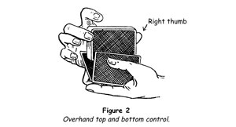
Be careful not to pull the cards away sharply in the first movement of the shuffle, making the top and bottom cards come together with a 'click'. Use a light touch. Note that by placing two known cards at the bottom and a third at the top, all three cards can be controlled by this valuable artifice. Practise the sleight in this way until you can do it with ease and certainty.
Top Card to Next to the Bottom and Back to the Top
Later you will find that this sleight is useful for showing that a chosen card that you are controlling is neither at the top nor at the bottom of the pack.
The Run
In magical parlance, this term means the pulling off of cards one by one from the right-hand packet with the aid of the left thumb in the course of the shuffle. To make the run, press the left thumb lightly on the back of the top card of the right-hand packet while holding this latter packet just tightly enough to allow one card only to escape. It is very important that the single cards be drawn off at the same tempo as the rest of the shuffle, so that there will be no hesitation at the start of the shuffle or its end.
A few minutes' practice with cards that are in good condition will prove how easy the sleight is, yet it is one of the most useful in the card magician's arsenal.
The Injog
This term is applied to the subterfuge of causing a card to project about 6 mm (¼ in) from the inner end of the deck. It is one of the oldest stratagems in magic, having been in use for over four centuries. It was first mentioned in Scott's Discouverie of Witchcraft, published in 1584.
The action of jogging a card is a simple one. In the course of the shuffle, when a card is to be jogged, move the right hand slightly towards the body, draw off one card with the left thumb, then move the hand back to its former position and continue the shuffle in the usual way. The card thus jogged should rest on the little fingertip, which enables you to know, by sense of touch alone, that the card is in the proper position (figure 3).
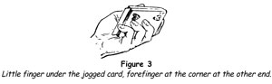
It is advisable at the start to make the card protrude about 12 mm (½ in) and, in shuffling off the remaining cards from the right hand, to make them lie irregularly so that the protruding card is covered and concealed. With practice the jogging of the card can be reduced to approximately 6 mm (¼ in). Here again it is most important that there shall be no alteration in the tempo. The card must be jogged and the shuffle continued without the least hesitation.
The Undercut
This sleight is used to bring the cards directly under a jogged card to the top of the pack.
A card having been jogged and the shuffle completed, bring the right hand upwards from a position a little below the left hand so that the point of the thumb will strike against the face of the jogged card, lifting it and the cards above it slightly; then move the right hand outwards with the lower packet, the thumbnail scraping against the face of the jogged card while the middle and ring fingers close on the outer end of the packet. Lift the packet clear and throw it on the top of the deck. This action brings the jogged card to the bottom and the card that is directly below it to the top of the pack.
To undercut to a jogged card is a very simple action if the right thumb strikes upwards, not inwards (figure 4).
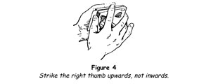
OVERHAND SHUFFLE CONTROL
A large proportion of card tricks consist of having a card selected, noted and returned to the middle of the deck, which is then shuffled. The chosen card is revealed by the magician in some startling way. To do this the chosen card must be controlled, and one of easiest, best and most natural methods is by using the overhand shuffle.
For example, possibly in the course of the shuffle the chosen card may have arrived at the top or bottom of the pack; therefore you take off three cards from the top and spread them face outwards, asking the spectator if his card is among them. Never say, 'You see, your card is not there.' You are not supposed to know whether it is there or not. Throw the three cards casually on the table. Then show several cards at the bottom. Finally gather up the three cards by placing the pack on them and picking up all together.
You will have the chosen card on the top, yet the onlookers will be convinced, if you have done your part simply and naturally, that the chosen card is lost in the pack and beyond your control. Thus you have succeeded in the most important part of the trick, for whenever a chosen card is controlled in some abnormal fashion your purpose is defeated. The real illusion of card magic begins with the conviction on the part of the spectator that his card is lost among the others. Without that conviction the trick has already failed.
Retaining Top Stock
The overhand shuffle control is extremely useful in tricks where it is necessary to retain a card or cards at the top of the pack while giving the impression that you are shuffling the cards.
To do this, undercut the lower half with the right hand and, in the first movement of the shuffle, injog the first card drawn off by the left thumb. Upon it shuffle the rest of the cards held in the right hand. Undercut below the injogged card and throw this packet on top. Although you have seemingly mixed the cards, you have retained the desired cards at the top.
Overhand False Shuffle
Many fine card feats depend on the fact that the pack has been arranged in a certain order familiar to the magician. To retain that order while apparently mixing the cards thoroughly, proceed as follows:
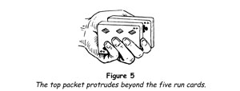
3. Press the tip of the left index finger against the face of this protruding packet and seize the cards below it by the ends, between the right thumb and middle finger. Lift them, again run five cards and throw the remainder on top.
The whole pack will now be in its original order.
The action consists simply of reversing the order of five cards in the middle of the deck and then, by reversing these same five cards again, bringing them back to their original order, the rest of the cards not having been disturbed. Done smoothly and rather rapidly, not looking at your hands and while addressing the spectators, the shuffle is completely deceptive.
Overhand Shuffle Practice Routine
The best method of practising the various overhand shuffles is to go through them in sequence.
Again check your work. The original top card should now be the fourth from the top of the pack. If that is the case and you have made the shuffles smoothly, you have made excellent progress towards acquiring this most useful of all card sleights. Practise until you can make the shuffles without looking at your hands and at the same time keep up an easy flow of conversation.
With the simple principles explained in the preceding sections, which can be learned in the course of a pleasant half-hour's toying with a pack of cards, you have a golden key which will unlock the door to many of the most entertaining card tricks it is possible to perform. Since the best way to learn to do magic is to do magic, in the next section several tricks are explained in which the principles you have already learned are put to use.
TRICKS WITH THE OVERHAND SHUFFLE
Having acquired facility with the overhand shuffle and the various manoeuvres accomplished by its use, the royal road to card magic, with all its surprising twists and turns, opens before you a vista of exciting adventures, of which you are the protagonist.
A good card trick - and by that we mean a card trick that entertains, surprises, amuses and puzzles an audience - has certain attributes:
The following tricks afford excellent practice in applying the different principles you have learned and will start your repertoire with some of the finest feats of card magic.
Topsy-turvy Cards
It is always a good rule to begin a series of card feats with a short, startling effect, one that will arouse the interest of the onlookers immediately and stimulate their interest in the marvels to follow. In this effect, one half of the pack is placed face to face with the other half, yet, on the word of command, the cards right themselves so that all of them face the same way.
Whenever possible you should use a borrowed deck, and we shall suppose that one has been handed to you with the request, 'Show us some card tricks.'
1. Take the pack and place it face down on your left hand. With your left thumb spread the cards by pushing them over to the right hand under pretence of examining the backs. 'These seem to be ordinary cards,' you say. 'Let's see the faces.' Close the deck into the left hand and square the cards, holding them in dealing position.
2. Take hold of the outer end of the deck between the right thumb on top and the fingers on the bottom, lift it and turn it over inwards - that is to say, towards your body - and lay it in your left hand, face upwards. Spread the cards as before, showing the faces and remarking, 'Just ordinary cards, aren't they?' Close the pack into the left hand again and square it, but this time, in doing so, let the lowermost card slip off the tip of the right thumb and push the rest of the cards forwards about 25 mm (1 in) (figure 6).
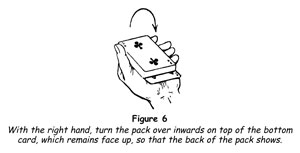
3. Grasp the outer end of the deck as before and turn it over inward on to the left hand and on to the face-up card. Square the pack and hold it in your left hand so that it slopes downward a little; thus no one can see the reversed card now on the bottom of the pack.
4. Cut off about half the cards by grasping them between the right thumb and middle finger. Turn the right hand over with a little flourish to show the face card of this packet and look at that card yourself, saying, 'I turn one half of the cards face upward, so.' As you say this, quietly turn your left hand over bringing it back upwards, thus bringing the reversed card uppermost (figure 7).
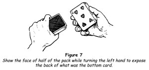
5. Still keeping your eyes fixed on the face card of the packet in your right hand, continue, 'I'll put this packet face upwards on the back of my left hand.' Do so (figure 8). The packet in the left hand, which the spectators think is face downwards, is really face upward with a single reversed card on top.
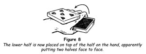
6. Draw out the packet from your left hand, grasping it at the sides near the ends, as you say, 'These face-down cards I'll place on the face-up packet,' and you do so, being careful to slope the packet so that no glimpse can be had of its bottom card. Take the pack off the back of your left hand and replace it in that hand, which you turn palm upwards, between the tips of the thumb on one side and the fingers on the other. With the right hand turn the pack over sideways three times, each time taking it between the left thumb and fingers, as you say, 'You see half the pack faces one way, the other half the reverse way.' The third turn will bring the single reversed card to the bottom.
7. 'I want to test these cards to see if I shall be able to do anything with them. I shall therefore order all the face-up cards to turn face downwards. Let me show you what I mean. I take one of the face-up cards, so.' Draw out the bottom card by the end towards your body, deliberately turn it face downwards on the top of the pack. 'Allez oop!' you exclaim, and, with a flourish, you spread the whole pack on the table. All the cards are face downwards. 'Excellent! You have trained your cards well. I am sure we shall have a great success with them.'
The most important thing for the beginner at card magic to bear in mind is this: a conjuring trick is just what the performer makes of it. It may be composed of the simplest elements, yet, given a plausible plot and dressed with appropriate patter, it can be transformed into an imposing illusion. In other words, it is not so much what you do as what you make the onlookers think you do.
The preceding trick affords an example of this fact. Merely to take the cards and go through the motions of apparently reversing them would be a tame affair, a mere curiosity. Asserting that the cards are intelligent, that they can be trained to act by themselves, puts a different complexion on the matter. The onlookers are amused by your fairy tale; they take a greater interest in the performance and sometimes actually persuade themselves that there might be something in it after all.
It has been said that 'the proper way to do tricks is to do tricks'. That is true, provided it is borne in mind that the tricks must not only be done but must also be presented or acted properly. Good presentation can only be acquired by actual performance before an audience, even if it is composed only of your home circle. Confidence in yourself is the main thing. If you know that you can do the trick without any possible hitch, then you can devote your whole attention to putting across the fairy tales you are telling. To help you in gaining this confidence, we shall from time to time, explain tricks that practically work themselves - self-workers, as they are called.
The art of interspersing these self-workers with tricks that call for skill is an important principle of card magic. The most eminent magicians use self-workers; but they use only the good ones, never those that call for endless dealing of cards or obvious mathematical principles. Some of the good self-workers are gems of subtlety and misdirection. Some of them depend on faults of observation on the part of the spectators; many depend on the inability of most people to understand properly what is being done.
The trick that follows is one of the latter kind and, when you have performed it, you will be astonished at the effect it causes.
A Poker Player's Picnic
Taking a pack of cards that has been thoroughly shuffled, a spectator cuts it into four piles. Turning the top card of each packet himself, he finds that he has actually cut the four aces.
If you make this your first trick, you must beforehand place the four aces on the top of the pack. If you wish to do it following other tricks, or with a borrowed deck, then you must get the aces to the top secretly. Never attempt to do that furtively. Run over the faces of the cards, holding them so that no one else can see them and at the same time saying, 'I suppose these are ordinary cards?' Watch for an ace, cut the deck to bring it to the bottom as you look up and say, 'Is there a joker in the pack? If so, I don't want that card.'
Continue running through the cards; each time you find an ace separate your hands just enough to be able to push it to the bottom with the left thumb as you glance at the spectators and make some casual remark. If there is a joker, discard it.
If you do the work openly and casually, to the onlookers you are merely toying with the cards and your actions pass without special notice.
1. If you are beginning with this trick and you have the aces at the top of the pack, well and good. If, however, you have had to sort them to the bottom as we have just explained, then you turn the pack face downwards and make an ordinary overhand shuffle. When you reach the last half-dozen cards run them - that is to say, pull them off with the left thumb, one by one, thus bringing the four aces to the top.
2. Execute the overhand shuffle control, retaining top stock, again leaving the aces on the top.
3. Offer to demonstrate how gamblers cheat at cards and comment casually that their skill is greatly overrated. 'As a matter of fact,' you say, 'almost anyone can duplicate their feats with very little practice'. Single out one of the spectators. 'You look as though you might be a good poker player. Will you help me?'
4. Place the pack before your assistant and request him to cut it into four packets about equal. He does this, and for the purpose of our explanation we shall call these packets A, B, C and D, the four aces being the four cards at the top of D (figure 9).
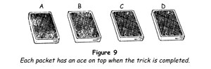
5. Instruct him to pick up A, remove three cards from the top of the packet and place them at the bottom, then deal one card from the top on to each of the other three packets.
6. Have him take B and repeat exactly the same process, putting three cards to the bottom and dealing one card on each of the other three packets. Have him do the same with C and D. (Follow this procedure with the cards and you will at once see that the three cards that are placed one by one on D are finally moved to the bottom of that packet, and then three aces are placed on top of each of the other packets quite unwittingly by the spectator himself.)
7. Recapitulate what has been done. 'You will recall that you yourself cut the cards and that I did not touch them at any time. I picked you for this demonstration because you have a poker face. Let's see if I judged you correctly - let's look at the cards at which you cut.' At your direction, the assistant turns over the top card of each packet and to his astonishment finds each card to be an ace.
Note particularly that at the end of the trick you emphasise that the assistant cut the cards, but do not mention that he also moved cards about. You do this deliberately because you want him to forget about this part of the trick. The average person has great difficulty in recalling the details of any fairly complex action. Capitalise on this weakness by stressing a part of what he did and suppressing another part. This expedient is often used in magic. You will be amazed, sometimes, to hear the assistant describe the trick and state that he shuffled the cards and then cut to the four aces, which he certainly did not do. This unconscious distortion will enhance your reputation and at the same time bring you considerable secret amusement.
A Pocket Discovery
A card having been freely selected by a spectator, noted and replaced in the deck, the pack is shuffled and then placed in a spectator's pocket. Any number having been chosen, the magician draws cards from the pocket singly and produces the selected card at the number chosen.
1. Begin by handing the pack to a spectator and asking him to shuffle it and while doing so to think of any card. When he has done that, instruct him to take the card out of the pack and hand the remaining cards to you. Turn away and have him show the card to the rest of the company.
This method of having a card taken by a spectator is a good one, not only because it is obvious that he has a free choice but also because the onlookers will think of it as merely having been 'thought of', which enhances the effect immensely. Note, too, that it is wise to have a chosen card shown to the audience. Nothing is more annoying than to find, on reaching the climax of your feat, that the drawer has forgotten which card he chose. That precaution also prevents a spectator from naming a card wrongly in order to embarrass you, which sad to relate some people are tempted to do.
2. You now have to control the chosen card for your own purposes and this you do by using the overhand shuffle control. That is, you shuffle off about half the pack on to your left hand, have the card replaced on this packet, run three cards flush, injog the next card and shuffle off. Undercut below the injogged card and throw on top. The chosen card now lies fourth from the top of the pack.
3. It is necessary for you to know the chosen card and to secure this information you must glimpse the index of the fourth card. Remark that the shuffle may have brought the chosen card near the top or bottom. Lift off the top three cards, show them and drop them face down on the table. Turn the pack face upwards in your left hand, take off several cards with your right hand, at the same moment pressing the top card of the pack (the chosen card, now resting against the left palm) to the left just enough to expose the index (figure 10).
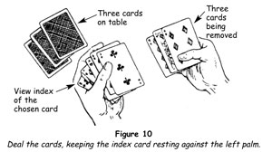
Since this action takes place on the side of the deck away from the audience, it is imperceptible to them. Show the cards in your right hand, replace them on the bottom of the pack, turn the pack face downwards and drop it on the three cards on the table. You have the chosen card on the top of the pack and you know what card it is, although everyone should be convinced that it is unknown to you and buried in the deck.
4. 'Let us put the cards to a harder test,' you say. 'Will you kindly empty your breast pocket?' As he does this you can generally contrive to cause some amusement by commenting on the bits and pieces he brings out. Hand the pack to him telling him to put it in his pocket, but you must note carefully which way the cards face as he does so.
'Now that the cards are out of my possession, will you name any number you please - say between one and twelve, just to save time.' Suppose he says, 'Eight.' 'Very well, this is what I propose to try. Seven times I will take a single card from your pocket and at the eighth draw I will order the chosen card to jump into my hand. Ready?'
5. Draw out seven cards in succession from the face of the pack, counting them and laying them face downwards on the table. 'Eight, you said. Very well, now for the eighth card.' Plunge your hand into the pocket, calling out, 'Allez oop!' Then, without withdrawing the hand, 'A card has leapt into my hand!' Lean forwards, let your right ear rest against the pocket. 'The card tells me it is a seven. The seven of --------- .' Then take the card out and hold it face downwards. 'Will you, be kind enough to complete the name?' 'The seven of hearts.' Turn the card face upwards and show that you have succeeded.
The feat is made up of the simplest possible elements, but properly presented it never fails to create amusement and wonderment.
Telepathy Plus
Having turned the conversation to the subject of mind reading, ask permission to attempt an experiment of that nature. Explain that you have had some success with objects that can be pictured mentally and pretend to select with great care some person as a concentrator and transmitter.
1. Hand him a pack of cards and have him shuffle it thoroughly, then instruct him to deal a row of five spot cards of differing suits and values. If picture cards or cards of the same value turn up, they are to be discarded.
Suppose that the row, when completed, consists of
(9 hearts) (5 spades) (A diamonds) (3 spades) (7 clubs)
Everyone must be convinced that these cards have been chosen by chance alone.
2. Take back the pack and invite the spectator to select mentally any one of the five cards and to concentrate deeply on its suit and value. In order not to be suspected of detecting the card by the direction of his gaze, turn your head away as he looks at them. When he announces that he has set his mind upon a card, turn the five cards face downwards as they lie, but in the meantime you have memorised their values, taking no notice of the suits, by saying to yourself, 'Ninety-five, one-thirty-seven.' In memorising figures always divide them into groups in this fashion; never try to remember separate figures.
3. In order to understand the following process of shuffling the cards, we should explain that its object is to place the five cards secretly at positions from the top of the pack corresponding with their values. Thus at the conclusion the ace of diamonds must be the top card, the three of spades the third card, the five of spades the fifth card, and so on.
To do this, assume a poker face, look steadily at the spectator and pick up the nine of hearts (the card of the highest value of the five), its face towards yourself, letting no one else get a glimpse of it. Look at it gravely, then lay it on the top of the pack in your left hand.
Recalling that the next highest card is the seven of clubs, begin an overhand shuffle by running one card flush on top of the nine of hearts, injog the next card and shuffle off. Undercut at the injog and throw on top.
4. Repeat your pantomime of studying the spectator's face as if to read his innermost thought, take up the seven of clubs, look at it and then put it on top of the pack. The next highest card being the five of spades, again you have to run one card flush, injog the next card, shuffle off, undercut and throw on top.
5. Repeat the same process with the three of spades; but with the ace of diamonds, after placing it at the top, you must injog the first card, shuffle off and undercut. When the undercut is thrown on top, the five cards will now be at the numbers from the top denoted by their values, and you are master of the situation. Needless to say, throughout the shuffling you have refrained from staring at your hands and have kept up a running fire of entreaties to your subject to concentrate upon his card.
6. Hand the pack to the spectator, addressing him somewhat after this fashion: 'I have obtained from you a distinct impression of a certain card. If I were to name that card and you agreed that it is the one of which you are thinking, others would almost certainly believe that you were merely being obliging. There would be no certainty that I really have read your thoughts.
'For this reason I have arranged matters so that the proof must be accepted by all - that is, if I have succeeded. The pack is in your hands; I cannot tamper with it and my proof is this: I have placed your card in a certain position, which I could only have done by knowing what card it is. Please name the card upon which you have concentrated. The five of spades! I knew it! And, knowing it is a five, I placed that very card fifth from the top. Deal four cards face down please. Now turn up the fifth card. The five of spades! Thank you; I have never worked with anyone possessing greater powers of concentration.'
Take back the pack, gather up the cards just dealt face downwards and shuffle the pack. In tricks of this nature it is always advisable to carry on at once with another that depends on an entirely different principle.
Thought Stealer
This trick follows naturally after the preceding feat, since it duplicates the effect of the other by an entirely different means. This course should be followed wherever possible when you are requested to repeat a trick.
1. Turn to one of the spectators and say, 'There are sceptics in every group, and it may well be that in your secret thoughts you believe that by some hocus-pocus the feat you have just witnessed was not genuine mind reading. If I can divine your thought will you agree that there is more to this than meets the eye? You will? Very well, let's see if you are as admirable a concentrator as I think you are.'
2. As you say this, idly run through the pack and remove these cards:
(2 clubs) (6 spades) (5 hearts) (7 spades) (4 diamonds) (Q diamonds)
one at a time in this order, placing the six of spades slightly overlapping the two of clubs, the five of hearts overlapping the six of spades and so on with the others (figure 11).
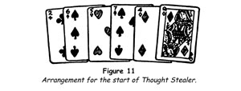
3. 'Now,' you continue, 'while I turn my back, I shall ask you to think of one of these cards. Will you do that?' Turn away. When the spectator says he is ready, turn around. 'You are the only person in this room who knows the name of the card you have mentally selected. That's right, isn't it? Good. Then be sure to keep your mind fixed on it.'
Gather up the six cards by sliding them together, retaining their order and place them on top of the pack. Thus the top card is the two of clubs and the sixth card the queen of diamonds.
4. Continue, 'Once again I shall offer proof that I can actually read minds.' As you say this, begin an overhand shuffle by lifting the lower half of the deck, run nine cards, injog the next card and shuffle off. Undercut at the injog and throw on top. Your sequence of cards now runs from the tenth card to the sixteenth card from the top of the pack.
5. Hand the pack to the spectator, saying, 'I shall now offer my proof. I want you to spell the name of your card mentally and for each letter in its name I want you to deal a single card. For example, if you thought of the ace of diamonds, you will spell a-c-e o-f d-i-a-m-o-n-d-s. Is that clear? Don't forget the "of".'
When the spectator says that he understands, have him make the deal and then say, 'Now I want you to pick up the last card you dealt, hold it face downwards and think intently of the card you chose mentally, which is unknown to the rest of us. You've done that? Now, for the first time, please name your card.' The spectator does so. 'Thank you. Will you be so good as to look at the card which you hold?'
He does so and finds that he is holding the very card which he selected mentally.
The explanation is a simple one. Each card, after the first, spells with one letter more than the preceding card, thus: two of clubs (10 letters), six of spades (11 letters), five of hearts (12 letters), and so on. Since there are several cards in the deck that will fit into each position, you will be able to pick them out quickly and apparently at random. This subtle principle should be borne in mind, for there are many effective feats which can be performed with it.
Pinkie Does It
A spectator having freely selected a card, noted it and returned it to the deck, the cards are thoroughly shuffled. Holding the deck upright in your left hand, the bottom card facing the spectators, place your index finger on the upper end. The chosen card is named and as you lift your index finger that very card is seen to rise from the deck clinging to it. The card is shown to have risen from the middle of the deck and the spectator may remove it from that position himself.
1. Hand the deck to a spectator to shuffle, then have him remove one card and hand the pack to you. Have him show the card to others as you turn away.
2. Have the card replaced. Use the overhand shuffle control to bring the card to the top, then shuffle it to the bottom and back to the top.
3. Stand with your left side to the audience holding the deck upright in your left hand, the bottom card facing the onlookers, between the first phalanx of your thumb on one side, a little below the middle of that side, and the first phalanxes of your index and middle fingers on the other side. Rub your right fingers along the upper end of the pack, squaring it, and with the tip of your middle finger push down a small packet, making a step at the back of the deck (figure 12).
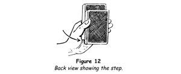
4. Gravely rub your right index finger vigorously on your left sleeve and then apply it against the top of the deck, holding the other three fingers flexed. Lift the finger slowly and nothing happens. 'I wonder what is the matter?' you say. 'I expected your card to rise out of the deck. Of course, it must be named first! What was your card?'
5. The card is named. Rub your right index finger on your sleeve again and apply it against the top of the deck, then straighten out your little finger so that its tip presses against the top card (the chosen card, now the rearmost card). With the little finger push the rear card upwards until it touches the index finger, then raise the right hand, maintaining the pressure of the little finger so that the card appears to cling to the index finger (figure 13).
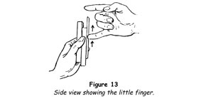
6. When the bottom of the rising card reaches and clears the top of the stepped packet, push its lower end forwards against the cards in front of the step, and at the same moment press your left little finger against the bottom of the stepped packet, squaring it with the deck. Flex your little finger and the card will remain protruding from the deck.
7. Tilt the deck forwards to show that this is actually the case and invite the spectator to remove his card and the deck and to examine them carefully - and your index finger, too, if he wants to.
The rising of a card from the deck has been a favourite feat with magicians and audiences for many generations. There are many ways of doing the trick with mechanical means, but this impromptu method will be found to create as much astonishment as the most complicated mechanical method if you present the feat as if you, yourself, really believe that the card rises spontaneously.
A Card and a Number
A chosen card should always be revealed in as striking a manner as possible. This effect affords a double surprise, because you divine a number merely thought of and use this number to locate a chosen card.
1. Have a card chosen by a spectator, noted by him and returned to the pack. Bring it to the top by using the overhand shuffle.
2. Shuffle the pack by the overhand method, running the chosen card to the bottom and back to the top.
3. Address a second spectator. 'Will you please think of a number between five and twenty? You have one? When I turn my back whisper your number to the person who selected a card.' Turn your back, turn the top card - the selected card - face upwards and dig your thumbnail into it near the two index corners. This will make a bump on the back of the card which you will feel with your right thumb when dealing the cards. Replace the card face down on the top.
4. Turn around and give the pack to a second spectator. 'I want you to deal, silently, cards to the number of which you are thinking. This will impress the number on your mind and help me to get the right impression. I will turn away as you deal.' Do so. When he announces that the deal is completed, instruct him to replace the dealt cards on the rest of the pack.
5. This done, face the front again and take the pack. 'My trick is this,' you say. 'I shall attempt to read your thoughts and so get the number of which you are thinking.' As you speak, shuffle the cards - using the overhand shuffle control, retaining top stock to keep the upper half of the deck unchanged.
6. Continue, 'As I deal the cards, please think intently of your number.' Deal the cards, one by one, counting them aloud, until you feel a bump under your right thumb. Let us say that this is the sixteenth card. Remove it, holding it in your right hand face downwards.
7. Announce that this is the number he thought of and when he agrees ask him, 'Do you know how I knew that is your number?' He will admit that he does not know. Turn to the spectator who chose the card and ask him, 'What was the name of the card you selected?' When he names it, slowly turn up the card you hold. It is that very card!